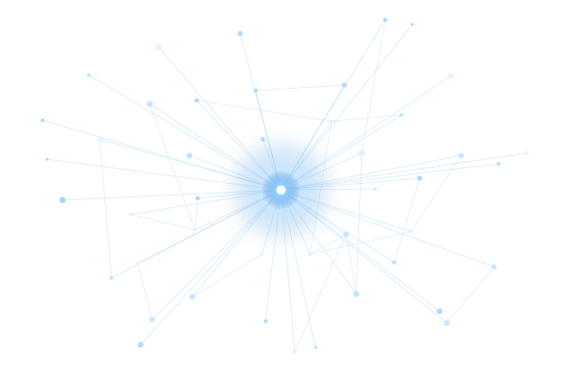
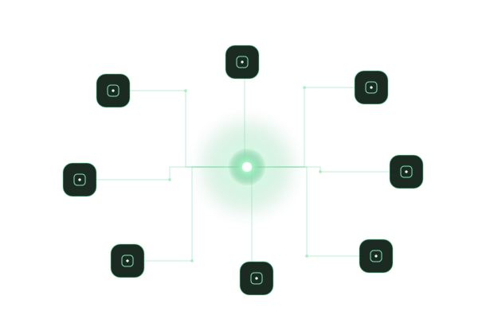
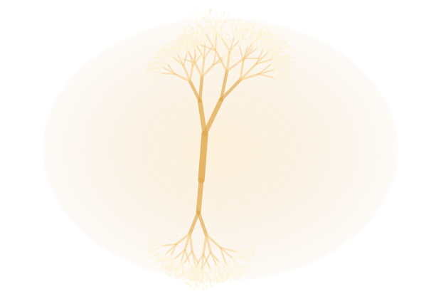

Unify
Connect all your tools, accounts and data sources in one intelligent ecosystem.
Explore integrations
It's your second mind.
Aithera connects everything, automates what matters and evolves with you. Your tasks, your projects, your data, your world. Unified — and running on your own computer.
Connect all your tools, accounts and data sources in one intelligent ecosystem.
Explore integrations
Create smart automations with natural language. No code. Just your intent.
Discover automations
Aithera learns from you, adapts to your needs and helps you become unstoppable.
See how it learns
Join a new generation of creators, builders and dreamers.
Aithera isn't a tool. It's a digital partner that actually understands me.
— Alex R.Entrepreneur
Everything Aithera does lives in one place, and you don't have to learn the pieces separately. Here's what each one is for.
Where your day starts.
The Hub shows what matters right now: what's waiting on a decision from you, what's already running on its own, and what changed while you were away. One screen that tells you where things stand — nothing buried three menus deep.
The engine that fits your computer.
AVCS reads what your machine can handle and tunes Aithera to match. On a modest laptop it stays light and quick; on a powerful desktop it makes full use of what you have. You never open a settings panel to make this happen — it measures, decides and adjusts by itself.
Everything you're working on, kept together.
Files, notes, drafts and the context around them are organised by what you're actually doing rather than by which folder they landed in. Come back a week later and the thread is still intact.
Specialists you can put to work.
Each agent is good at one kind of job — writing, researching, reviewing, organising, keeping track of things. You ask in plain language and the right one picks it up. No flowcharts to draw, no scripts to write, nothing to learn first.
Things that happen without you.
Describe what should happen and when, once. From then on it runs by itself — while you're in a meeting, asleep, or away for the weekend. When something genuinely needs your call, it waits for you instead of guessing.
You don't repeat yourself.
How you like things done, what you've already explained, the people and projects you deal with every week. Aithera keeps that and uses it. It works in your own language, and the picture it has of your work gets sharper the longer you use it.
See what it's actually doing for you.
Plain numbers on what ran, what it saved you, what needed you and what didn't. No dashboard to learn and no vanity charts — just where your time went and what Aithera took off your plate.
Most software asks you to adapt to it. This one adapts to you.
Your email, calendar, files and conversations are processed on your own machine. The content never leaves it and never reaches us.
Describe the outcome you want. There's nothing to configure, no syntax to get right and no builder to learn.
Routine work runs unattended — overnight, over the weekend, while you're in a meeting.
Aithera measures what your machine can do and adjusts itself. Light on a laptop, fast on a workstation.
Your preferences, your context and the way you like things done carry over from one day to the next.
Aithera works fully without signing up. An account only adds support and, later on, licensing — never permission to use your own machine.
Aithera plugs into the accounts and files you work with every day, and does it locally — connecting something doesn't hand its contents to anyone.
Reads the noise, surfaces what matters, drafts replies in your voice and follows up on what you're waiting for.
Sees your week as it really is, prepares what each block needs, and protects the time you set aside.
Works with what's already on your disk — finds it, reads it, writes it, keeps it in order.
Keeps the loose ends of a project together so nothing gets stranded in a note you never reopen.
New connections arrive with each release. Availability depends on the version you're running.
Aithera is for your own work. Autopilot is for your company's: we design and build the automations that take repetitive work off your team — fewer errors, less busywork, and hours back every week.
Go to Aithera AutopilotFree consultation · No commitment · Measurable results
The full guides ship with the first public release. Meanwhile, the things people ask most.
No. Aithera works completely without one. An account adds identified support and, later, licensing — it never gates what you can do on your own computer.
The content of your email, calendar, files and conversations is processed on your own machine and is not sent to us. If you turn on the optional diagnostics, what's sent is anonymous technical measurements — never the content of anything you work on — and you can switch it off.
A 64-bit Windows 10 or 11 PC. The everyday features work on ordinary hardware; a more powerful machine simply lets Aithera do more at once.
No. Everything needed to run comes included and is configured automatically the first time you open it.
Aithera is in private beta. Request access below and we'll write when your place is ready.
Write to hola@aithera.tech and a person will answer.
The software you use every day should adapt to you — not the other way round.
Most tools ask you to learn them. To remember where things live, to explain the same context again and again, to click through the same five steps every Monday. That work never appears on anyone's list, but it eats the hours you meant to spend on something that mattered.
Aithera is built from the opposite starting point. It learns how you work, takes the repetition off your hands, and keeps your work on your own machine — because the tool that knows the most about your day shouldn't be the one holding it hostage.
It's made by a small team that uses it every day, and shaped by the people testing it with us.
It's in open beta for Windows 10 and 11, and free to use. No account needed — it runs on your own computer.
Download for WindowsSomething not working? Write to hola@aithera.tech.